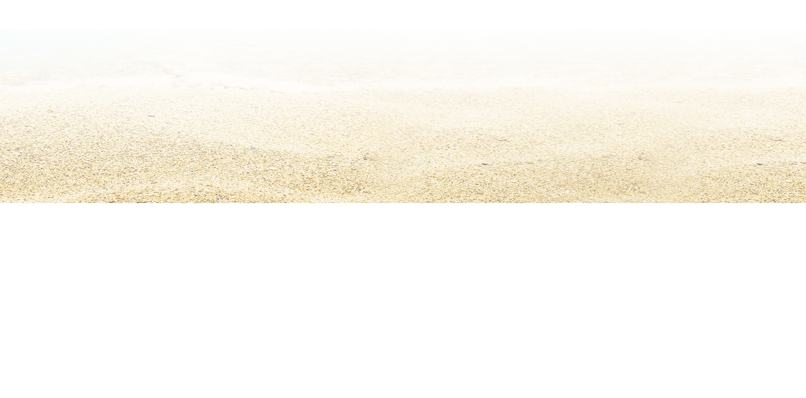
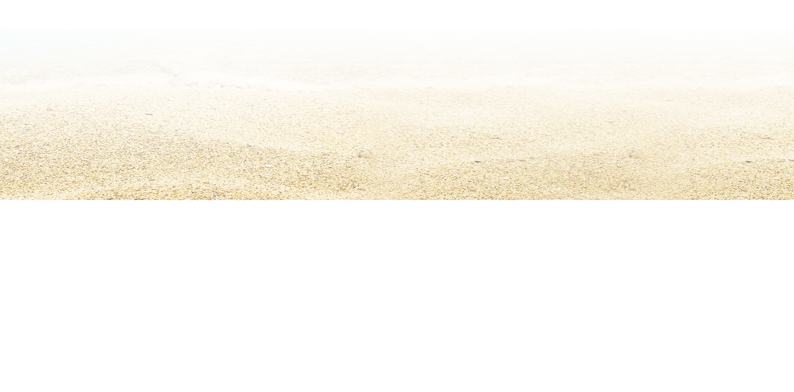
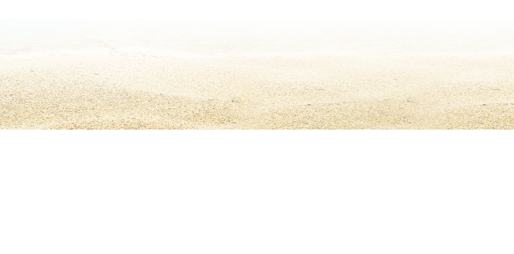
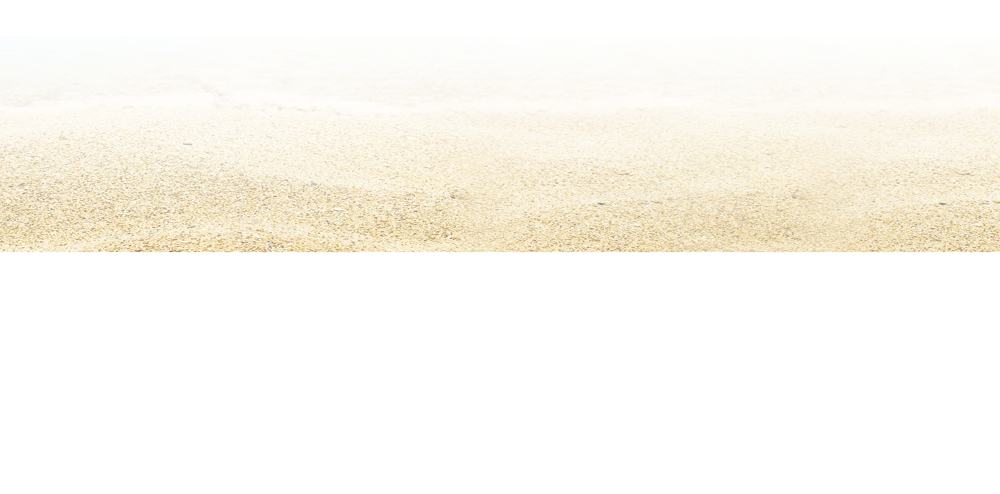

I'm Dana.
a freelance digital marketer.
 




I am an international masters student, studying Digital Marketing and Channel Management at the University of Surrey. I am originally from New York. I ❤️ to travel and connect with different types of people all over the world.

I have a background with freelance photogrpahy and videography as well as website design. This helps me aesthetically pleasing content, as well as eye-capturing visuals that help any campaign.
During my travels, I found a love for freelancing through social media. While in Australia I managed two cafe's Instagrams. This helped them increase revenue by 10%.
© 2021 Dana O'Sullivan.